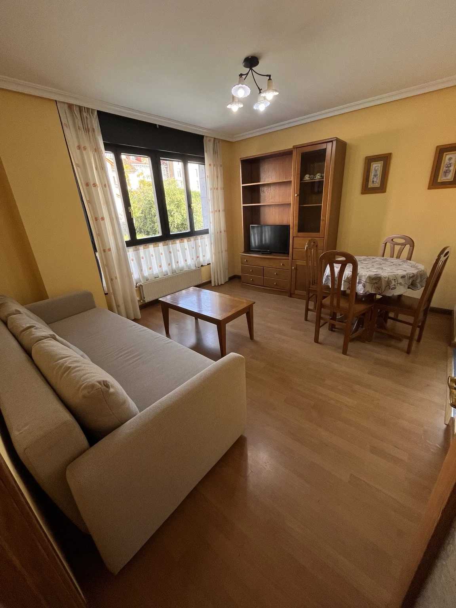

← Alojamientos
COLUNGA · 4 HUÉSPEDESEntra.
Entra.
Imagínate aquí.
Descubre cada espacio antes de llegar.
4 plazas1 dormitorioSofá cama en salón1 baño
Tu apartamento en Colunga
Imagina tus días aquí
Elige las fechas y cuántos vendréis. Hernán te confirmará disponibilidad y precio personalmente.
Explorar la viviendaColunga
Disponibilidad por confirmar¿Cuándo te gustaría venir?
Consulta disponibilidad y precio para tus fechas. Tu estancia quedará reservada cuando recibas la confirmación.
Una visita en primera personaAbre la puerta.
Abre la puerta.
Descubre tu estancia.
Desde el portal hasta las habitaciones. Acompáñanos y descubre cómo se conectan los espacios.
1 min 45 s · Con sonido opcional
Ver las 17 fotos ↓Tu estancia en Colunga
La casa, a tu ritmo.
Desliza las fotos o toca una imagen para ampliarla.
01 / Una primera miradaLas 17 fotosSalón · cocina · dormitorio · sofá cama · baño+
02 / DescansoDónde dormirásDormitorio + sofá cama+
- Dormitorio con cama doble y armario.
- Sofá cama en el salón.
- El sofá cama permite compartir la estancia hasta cuatro personas.
03 / Vida diariaCocina y salónCocinar · comer · descansar+
- Vitrocerámica, horno, frigorífico y microondas.
- Cafetera de filtro y lavadora.
- Mesa de comedor con cuatro sillas y televisor.
04 / AseoEl bañoBañera · mampara · ventana+
- Bañera con mampara.
- Lavabo, inodoro y bidé.
- Ventana al exterior.